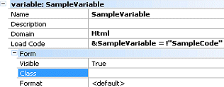

This document describes the 'Selection' node that is included in every Work With.
The purpose of this Selection node is to define the Work With Web Panel available options that will be generated for the selected instance.
Its properties are as follows:
- Caption. Literal to appear in the Web Panel Form caption. If the property is empty, the description property value is used. If you want to set a literal use quotes. Attributes, variables, and functions are not supported. This property is also used to reference the object in the Recent links section.
- Description. It is the description of the Work With object to be generated. Initially, it uses the Transaction description property in combination with the Work With Pattern general settings (Labels section).
- Rows per page. It allows you to define the number of rows to be displayed in the associated grid. The value can be a fixed number (e.g. 10 rows), an enum value (like Page.Rows), unlimited (<unlimited>), or default (<default>). In the last case, the value is taken from the Work With Pattern general settings (Grid section).
- IsMain. False (default) or True. True value forces the generated object to be generated as a main object.
- MasterPage. Defines the MasterPage object; the <default> option uses the Default Master Page property value, otherwise it uses the <none> value.
Its subnodes are as follows:
This node allows you to define which modes will be offered to invoke the Transaction, the default value means using the Work With Pattern general settings.
- Insert: Default | true | false
- Update: Default | true | false
- Delete: Default | true | false
- Display: Default | true | false
- Export: Default | true | false
In the generated Work With object you will find: three columns in the grid with the update, display and delete options, a "+" bitmap to Insert records, and an independent Export to Excel button outside the grid.
For each mode, a condition can be specified. The following properties are available:
- Insert Condition
- Update Condition
- Delete Condition
- Display Condition
- Export Condition
If a condition is defined, the associated action will be enabled only if its evaluation is True. For the update, delete, and display actions (which apply to a particular record) the condition can refer to row values, for example, "CustomerId = 10". The condition can be anything that can be written inside an "if" statement in GeneXus, and often contains references to the context (current user, user level, etc), object parameters, and the like.
Defines the attributes to be shown in the grid, and sets their properties.
Attribute properties:
- Attribute. Attribute name.
- Description. Text that will be shown as a label in tabular tabs, or as a column title in grid tabs. The default value is taken from the attribute's ContextualTitle.
- Autolink. If the attribute is a Description Attribute and this property is set to True, a link to the corresponding View web panel will be placed wherever the attribute is used.
- Visible. True (default) or False.
- Class. Defines the theme class-based attribute, according to Classes of the selected Theme.
- Format. Defines the Format Property used.
When right-clicking on the Attributes node, a contextual menu will appear allowing you to add new attributes or variables.

When defining a variable you will need to:
- Name: variable name.
- Description: variable description.
- Domain: variable domain.
- Load Code: Code to load the variable
- Form
- Visible: True | False value.
- Class: Theme class associated with the control.
- Format: Text | HTML | Raw HTML | Text with meaningful spaces.
The grid can have many orders for sorting the rows. By right-clicking on the Orders node, you can add a new order, its name, and composition. Each Order can be composed of many attributes and each attribute can be ascending or descending.
In the example shown in the image, Countries can be sorted by Name (CountryName) or World Region (CountryWorldRegion) or World Region and Name. If there are many Orders, a combo will be presented (the Combo values are the name of each Order).
Defines the conditions to filter the rows.
Its subnodes are as follows:
- Attributes. Defines the attributes/variables in the plain level form which will be used in the conditions.
- Conditions. When an attribute/variable is added to the Attributes Node, you can add its associated condition to filter the data.
In the example above, the filter attributes are CountryName and CountryWorldRegion, and there are two conditions:
CountryName like &CountryName when not &CountryName.IsEmpty()
CountryWorldRegion like &CountryWorldRegion when not &CountryWorldRegion.IsEmpty()
In addition to the predefined nodes that we have described, we can add a node called 'Actions' to the Selection node. This node allows you to define actions so that the user can execute them when working with the Work With Web Panel.
When applying the pattern, each action will be generated as an event in the Work With web panel.
To create an Action, right-click on the Selection node, select Add and then Actions, this will add an Actions node under the Selection node. Then, on the Actions node, right-click, Add Action.
An action has the following properties:
- Name. Action name (the associated event name will be generated as 'Do<action name>').
- Caption. This is the caption of the Action, eg.: if the Action is associated with a button, the property applies to the button caption.
- GXObject. Invoked object when performing the action.
- Condition. Determines when the action will be enabled.
- ButtonClass. It's the theme class that you associate to the button associated to the Action.
- Grid (category). Its properties apply to the selection Grid of the Work With web panel.
- Ingrid. Defines if you want the action to be added as a grid column (so that the action can be applied to a particular row) or as an independent action (outside the grid). In this last case, a button will be added with a user event associated with it, named with the Caption property value. Use the True value to set the action in the grid; False to set the action outside the grid. When using the True value, each action is displayed at the beginning of the grid. When using the False value, the action buttons are added at the bottom of the Web Panel.
- MultiRowSelection. By setting this property to True, a column with a checkbox will be added as the first column of the grid (from left to right), and the action will be taken out of the grid. In this way, at runtime, the action can be applied to multiple rows. The default value for this property is False. When MultiRowSelection=True, an SDT collection with all the attributes of the selected rows is added to the event code associated with the button. Then, the GeneXus object that was specified in the GXObject property is called, and the SDT is transferred as the first parameter as well as the additional parameters.
- Image. Image to be associated with the Action in the Work With web panel when the Action is enabled (depending on the Condition property).
- DisabledImage. Image to be associated with the Action in the Work With web panel when the Action is disabled (depending on the Condition property).
- Tooltip. Is the tooltip that appears when the mouse is positioned over the Action.
- Call Type. Call type for the object in grid actions. If "Auto", "Link" will be used for all objects except non-main Procedures. When using the Call value, an event will be generated to do the calling to the transaction. When using the Link value, the grid load logic will use the link method to call the object (&Control.Link = TransactionName.Link(Mode, parameters)).
- Custom (category)
- Custom Code. Procedural Genexus code used to execute the action. Custom code cannot be used in conjunction with "MultiRowSelection" Actions.
When right-clicking on the Action, a contextual menu will appear allowing you to define parameters. These parameters are included as Call parameters to the object defined in the GXObject Action property.
Make sure to set the correct Object parm rule. For example, if you define the following Action in WorkWithClient with ClientId parameter:
In the WorkWithClient the next associated event will be generated (the parameter will only be added in the call to the object):
Event 'DoClientInvoices'
Call('ClientInvoice', ClientId)
EndEvent
All changes made on pattern instance will generate code in the corresponding object.
I.E.: if you change some property in selection node, code will be written on WW<TRN> web panel.
|